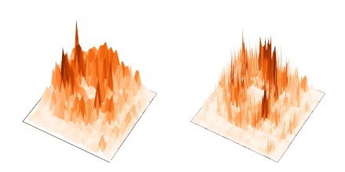
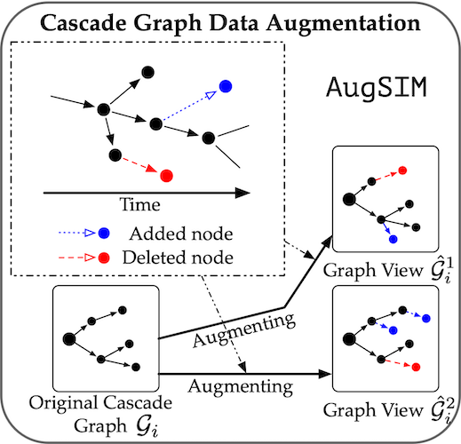
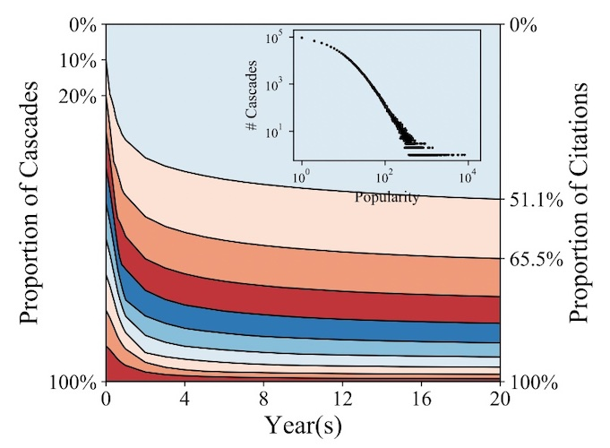
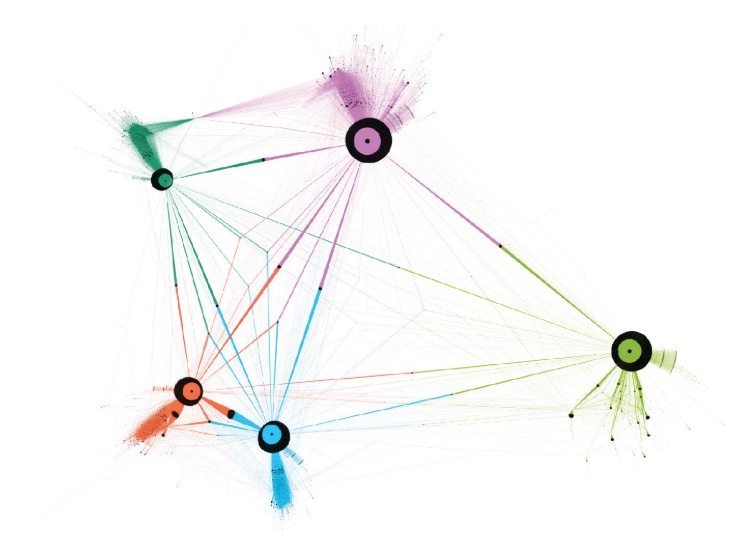
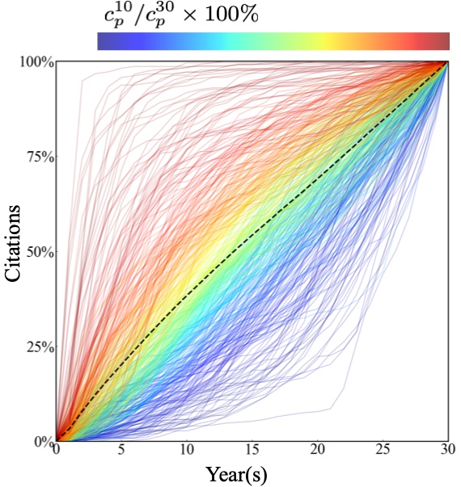

Curated Publication
Spatial-Temporal Contrasting for Fine-Grained Urban Flow Super-Resolution

Xovee Xu, Ting Zhong, Fan Zhou, and Goce Trajcevski
Under review, 2022
Urban flow super-resolution (FSR) problem aims to infer the fine-grained flow maps from coarse-grained ones, benefiting various smart-city applications on reducing electricity, maintenance, and operation costs. Existing models use techniques from image super-resolution and achieve good performance in FSR. However, they often rely on supervised learning with a large amount of training data, and often generalize poorly and face overfitting. We present STCF, a self-supervised framework for data- and parameter-efficient Expand urban flow super-resolution. It consists of (i) two pre-training networks for spatial-temporal contrasting between flow maps; and (ii) one coupled fine-tuning network for fusing learned features. STCF attracts spatial-temporal similar flow maps together and repels others away in the representation space. Extensive experiments are conducted on five large-scale real-world urban flow datasets, demonstrating the advantages of STCF over prior arts on inference performance, efficiency, and transferability.
code
CCGL: Contrastive Cascade Graph Learning

Xovee Xu, Fan Zhou*, Kunpeng Zhang, and Siyuan Liu
arXiv:2107.12576, 2021
Supervised learning, while prevalent for information cascade modeling, often requires abundant labeled data in training, and the trained model is not easy to generalize across tasks and datasets. Semi-supervised learning facilitates unlabeled data for cascade understanding in pre-training. It often learns fine-grained feature-level representations, which can easily result in overfitting for downstream tasks. Expand Recently, contrastive self-supervised learning is designed to alleviate these two fundamental issues in linguistic and visual tasks. However, its direct applicability for cascade modeling, especially graph cascade related tasks, remains underexplored. In this work, we present Contrastive Cascade Graph Learning (CCGL), a novel framework for cascade graph representation learning in a contrastive, self-supervised, and task-agnostic way. In particular, CCGL first designs an effective data augmentation strategy to capture variation and uncertainty. Second, it learns a generic model for graph cascade tasks via self-supervised contrastive pre-training using both unlabeled and labeled data. Third, CCGL learns a task-specific cascade model via fine-tuning using labeled data. Finally, to make the model transferable across datasets and cascade applications, CCGL further enhances the model via distillation using a teacher-student architecture. We demonstrate that CCGL significantly outperforms its supervised and semi-supervised counterpartsfor several downstream tasks.
paper, code
CasFlow: Exploring Hierarchical Structures and Propagation Uncertainty for Cascade Prediction

Xovee Xu, Fan Zhou*, Kunpeng Zhang, Siyuan Liu, and Goce Trajcevski
IEEE Transactions on Knowledge and Data Engineering, 2021
Understanding in-network information diffusion is a fundamental problem in many applications and one of the primary challenges is to predict the information cascade size. Most of the existing models rely either on hypothesized point process (e.g., Poisson and Hawkes processes), or simply predict the information propagation via deep neural networks. However, they fail to simultaneously Expand capture the underlying global and local structures of a cascade and the propagation uncertainty in the diffusion, which may result in unsatisfactory prediction performance. To address these, in this work we propose a novel probabilistic cascade prediction framework: Hierarchical Cascade Normalizing Flows (CasFlow). CasFlow allows a non-linear information diffusion inference and models the information diffusion process by learning the latent representation of both the structural and temporal information. It is a pattern-agnostic model leveraging normalizing flows to learn the node-level and cascade-level latent factors in an unsupervised manner. In addition, CasFlow is capable of capturing both the cascade representation uncertainty and node infection uncertainty, while enabling hierarchical pattern learning of information diffusion. Extensive experiments conducted on real-world datasets demonstrate that CasFlow reduces the prediction error to 21.0% by only observing half an hour of cascades, compared to state-of-the-art approaches, while also enabling model interpretability.
paper, code
A Survey of Information Cascade Analysis: Models, Predictions, and Recent Advances

Fan Zhou, Xovee Xu*, Goce Trajcevski, and Kunpeng Zhang
ACM Computing Surveys, 2021
The deluge of digital information in our daily life—from user-generated content, such as microblogs and scientific papers, to online business, such as viral marketing and advertising—offers unprecedented opportunities to explore and exploit the trajectories and structures of the evolution of information cascades. Abundant research efforts, both academic and industrial, have aimed to reach a better Expand understanding of the mechanisms driving the spread of information and quantifying the outcome of information diffusion. This article presents a comprehensive review and categorization of information popularity prediction methods, from feature engineering and stochastic processes, through graph representation, to deep learning-based approaches. Specifically, we first formally define different types of information cascades and summarize the perspectives of existing studies. We then present a taxonomy that categorizes existing works into the aforementioned three main groups as well as the main subclasses in each group, and we systematically review cutting-edge research work. Finally, we summarize the pros and cons of existing research efforts and outline the open challenges and opportunities in this field.
paper
A Heterogeneous Dynamical Graph Neural Networks Approach to Quantify Scientific Impact

Fan Zhou, Xovee Xu, Ce Li, Goce Trajcevski, Ting Zhong, and Kunpeng Zhang
arXiv:2003.12042, 2020
Quantifying and predicting the long-term impact of scientific writings or individual scholars has important implications for many policy decisions, such as funding proposal evaluation and identifying emerging research fields. In this work, we propose an approach based on Heterogeneous Dynamical Graph Neural Network (HDGNN) to explicitly model and predict the cumulative impact of papers and authors. Expand HDGNN extends heterogeneous GNNs by incorporating temporally evolving characteristics and capturing both structural properties of attributed graph and the growing sequence of citation behavior. HDGNN is significantly different from previous models in its capability of modeling the node impact in a dynamic manner while taking into account the complex relations among nodes. Experiments conducted on a real citation dataset demonstrate its superior performance of predicting the impact of both papers and authors.
arXiv, code